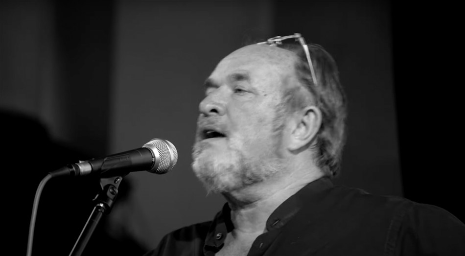
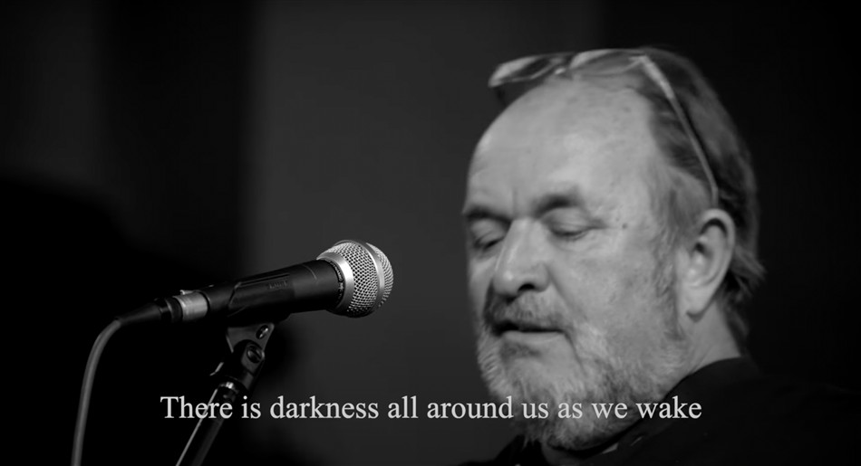
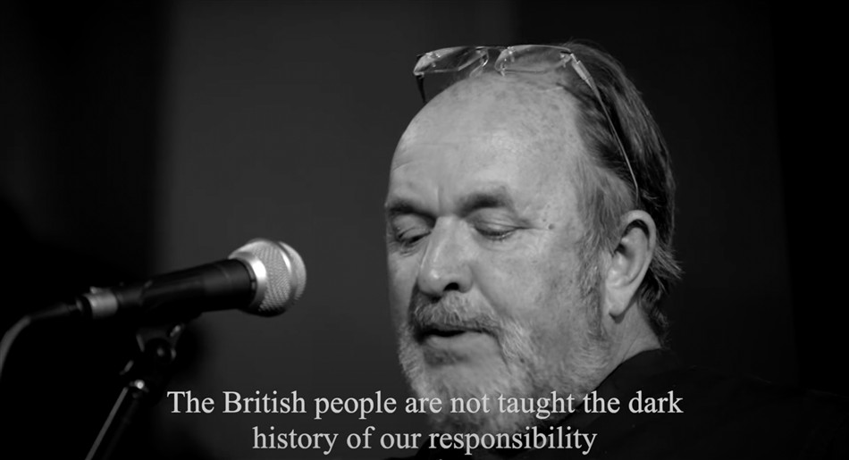

Historian William Dalrymple Speaks about Gaza
Best-selling Writer and Historian William Dalrymple speaks about Gaza and Palestine, and about Britain's historic responsibility for the situation there. His speech introduced 'A Golden String: William Blake in Words and Music ' which was a fundraising event for Medical Aid for Palestinians (MAP) at St James's Church, Piccadilly, London on May 30th, 2025. Filmed by Andrew Catlin and Richard Heslop. Edited by Sam Sharples.
ON SOURCE: SUSHEELA RAMAN
THANKS TO VICKY DANIEL AT RIVERFISH MUSIC FOR DRAWING OUR ATTENTION TO THIS


